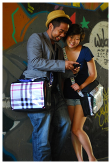
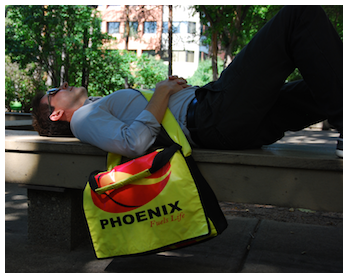

About RUZE
What are we about?
RUZE is committed to providing clean and simple feel-good products for environmentally conscious consumers. We aim to be internationally recognized as a leader in environmentally responsible products through innovative re-use of materials.
What’s in a name?
RUZE comes from the expression to re-use. This concept of re-use is evident in all RUZE products and core to our company’s beliefs.

How do we re-use?
Here at RUZE we help to divert vinyl billboards from landfills by re-using these discarded materials and transforming them into unique RUZE products.
What makes us so unique?
All RUZE products are one of a kind because the designers carefully construct RUZE products using the best cut.